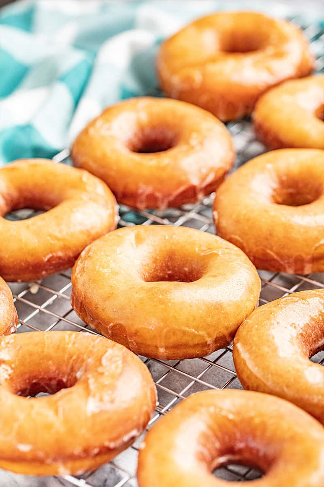

Pizza recipe

Description
This recipe offers an easy way to make delicious homemade donuts that are perfect for breakfast, snacks, or indulgent treats. These donuts are soft, fluffy, and customizable with various toppings and glazes.
Whether its as a breakfast treat with your favorite hot beverage, served as a dessert or snack for gatherings and parties, or customized with different glazings, toppings, or fillings for variety, homemade donuts are best enjoyed fresh on the day they are made. However, they can be stored in an airtight container at room temperature for up to 1-2 days. If glazed, store them in a single layer to prevent the glaze from becoming sticky.
This recipe contains wheat (in the flour), dairy (in the milk, butter, and optional glaze), and eggs. Individuals with allergies to these ingredients should avoid consuming this product or use suitable alternatives. Additionally, if using toppings or fillings, be mindful of potential allergens such as nuts or soy. Always check ingredient labels for allergen information and consider individual dietary restrictions when serving.
Ingredients
- 2 cups all-purpose flour
- 1/2 cup granulated sugar
- 2 teaspoons baking powder
- 1/2 teaspoon salt
- 1/2 cup milk
- 2 large eggs
- 4 tablespoons unsalted butter, melted
- 1 teaspoon vanilla extract
- Oil for frying (such as vegetable oil or canola oil)
- Optional glaze ingredients: powdered sugar, milk or water, vanilla extract
Steps:
- In a large mixing bowl, whisk together the flour, sugar, baking powder, and salt until well combined.
- In a separate bowl, whisk together the milk, eggs, melted butter, and vanilla extract.
- Pour the wet ingredients into the dry ingredients and mix until a smooth dough forms. Be careful not to overmix.
- On a floured surface, roll out the dough to about 1/2 inch thickness. Use a donut cutter or two differently sized round cookie cutters to cut out donuts and donut holes. Re-roll any scraps and continue cutting until all the dough is used.
- Heat oil in a large pot or deep fryer to 350°F (175°C). Carefully add the donuts to the hot oil, a few at a time, making sure not to overcrowd the pot. Fry for 1-2 minutes on each side, or until golden brown.
- Remove the fried donuts using a slotted spoon and place them on a plate lined with paper towels to drain excess oil.
- If making a glaze, whisk together powdered sugar, milk or water, and vanilla extract in a bowl until smooth. Dip each donut into the glaze, allowing any excess to drip off, then place them on a wire rack to set.
- Allow the glaze to set for a few minutes before serving.
- Enjoy your homemade donuts!